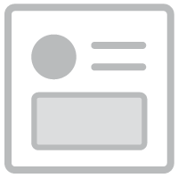
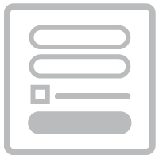
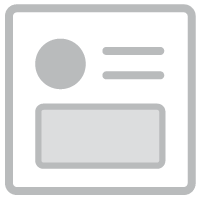
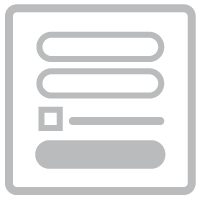
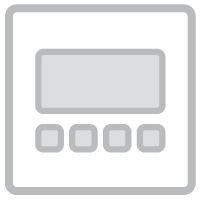
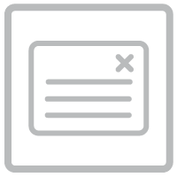
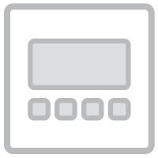
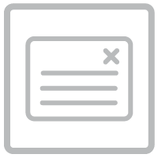

Mi
與
Zac
擁有企業管理、設計創新管理、數位製作企劃、平面 / 數位設計的背景 與超過十年的網路 / 行動應用專案的參與經驗
目前專注於：
協助數位產品團隊在使用者介面/體驗（UIUX）的領域中取得突破
 



 



燒錢燒不停，我的產品卻還留不住user，又醜到沒面子demo... 產品經理之腦子業障重
在最主要的使用流程上， 訪客總是搞不懂、嫌難用 或是說不上來的感到哪裡奇怪嗎？ 我們能善用數據分析、使用者研究方法，與創意思考 為您有根據地找出突破僵局的可行改版方案
NT 300,000 起
當您遇到了使用者經驗的改善瓶頸，似乎用盡了各種眼前的選項，還受限於現有技術架構與其他過往設計決策時，我們會建議從手邊資源（現有監測數據與在線用戶）開始尋找線索。在雙方聚焦最該提升的關鍵頁面（或場景）後，我們將從業界公認的設計守則開始檢驗各類可能初階錯誤（搭配監測數據佐證疑點），一路做到用戶研究來挖掘有價值的機會點。
如果您目前沒有介面點擊數據，我們建議先行埋設收集起碼2000人次的使用行為。MZ 目前有代客設定Google Analytics（透過 Google Tag Manager）、CrazyEgg，與UXCam監測服務。費用從NT$ 50,000起算，依複雜度決定最終報價。歡迎利用下方聊聊產品按鈕洽談需求。
改版階段的用戶研究，很適合先做可用性測試：觀察紀錄用戶在執行指定動作（比如：完成身份註冊後收藏第一個頻道）；或根本不指定動作，來觀察用戶如何認知與理解自家產品（或是如何被激怒…）。一般會要求用戶邊操作邊把想法大聲說出來，事後透過側錄影片來推敲用戶每個階段的心智決策模型。有時，我們會對產品的價值定位有了根本的懷疑，這時就需要退一步做用戶訪談：來檢驗使用者體驗的設計思路，是否有更值得嘗試的方向。也有比較幸運時，我們能明確地透過問卷取得來自用戶的明確指引。
MZ 最大的價值在於：綜合考量上述的事證、機會點與產品發展目標，揉合出一個具有突破性與技術可行性的改版提案。此時，我們會針對專案聚焦的關鍵頁面/場景，完成新版的線框稿（Wireframe），與可互動原型（Interactive Prototype）的製作。連同過去研究記錄檔案，交還於您的現有設計團隊進行實現。
專案計價方式與用戶研究的種類與份量有很大的關係，同時還取決於改版提案的數量與細緻度。基本需要 NT$300,000 才能開案，不包含研究對象的招募成本。另外，強烈建議預留最少二個月 的作業時間，有建設性的破格需要時間來醞釀。
用心觀察理解用戶會為改版的路線找到明燈。 如果您認同我們的邏輯與價值，歡迎利用下方聊聊產品按鈕，讓我們一起了解您的產品與疑問。
總算摸清楚了主要客群跟定位 注意力開始投向 某些需要改進的轉換率/使用率了嗎？ 我們能主導連續一貫、統計嚴謹的二擇一（多擇一）測試 科學地步步推進您所關心的關鍵數據
NT 50,000 起
大多時候，經營團隊即便已絞盡腦汁讓產品的動線邏輯完善，重要的數據還是殘酷地提醒介面成效仍然達不到營運的目標。在這個階段，我們建議雙方一起透過監測數據佐證找出重大瓶頸後，把注意力完全放在該頁面/場景的使用介面（UI）優化。我們將從主導操作一連串的測試實驗，目標在找出統計上嚴謹可信的改進方案，一般是代表信賴區間超過 95%、實驗跨期最少 2 週，與成效勝過控制組 10% 以上的測試案例。
如果您目前沒有介面點擊數據，我們建議先行埋設收集起碼2000人次的使用行為。MZ 目前有代客設定Google Analytics（透過 Google Tag Manager）、CrazyEgg，與UXCam監測服務。費用從NT$ 50,000“起算，依複雜度決定最終報價。歡迎利用下方聊聊產品按鈕洽談需求。
所謂的二擇一或多擇一測試（A/B/n Testing），大致是：先訂下要測試的潛在優化變因，還有優化的目標數據，作為整個實驗要驗證的假設（比如：假設選單送出按鈕文字從「送出」，改成「預約我的假期」，可以提升表單的轉換率）。接下來就是透過程式的設定，將往後流量隨機分派一半的訪客去控制組（A 案，按鈕文字還是「送出」），另一半去對照組（B 案，按鈕文字改成「預約我的假期」）。同時透過程式去標記該訪客先前使用的版本，免得訪客前後體驗不連續而感到突兀。接下來就是等足夠流量與時間，去檢視對照組是否真的達到統計嚴謹要求的改善效果。至於多擇一測試只是增加對照組，並且再把流量平均分配而已。
執行實驗有金錢跟時間成本外，還有大量流量成本隨時拿去測試未必有效的假設。因此，MZ 在本服務最大的價值在：身為實驗主導角色，抓準測試方向的直覺跟經驗。我們會優先從明顯的介面改良切入點開始，接下來才會透過用戶操作觀察來探索更大格局的實驗假設（比如說：如果我們乾脆省掉這幾個欄位，能不能大幅提升整體轉換率？）
MZ 在製作對照組版本與埋設流量導引的程式時，只會再有必要時才需要您的開發團隊支援。測試成功的對照組出爐後，我們會打包額外語法與設定給您的團隊進行部署上線，並共享研究記錄文件。確保您的開發設計團隊不會因為持續性的實驗而負擔過大或方向權責不清。
此類型專案目前每月在單一頁面/場景計價NT$50,000 。由於需要統計可信的檢驗，每個月在單一頁面/場景只能組織最多 2 組實驗，如因流量或信賴區間未達標，需要展延下組實驗直到結果產生為止。
連續的成功優化會帶來相乘的複利成長。 如果您認同我們的方案與價值，歡迎利用下方聊聊產品按鈕， 讓我們一起了解您的產品與疑問。
已經對最新版產品的功能與流程感到滿意， 卻總覺得在視覺觀感上沒有對手專業嗎？ 我們能為您拆解指定對手的設計元素， 逐項挑剔演進成自己的風格指南。 讓您有系統地在美感上取得優勢。
NT 100,000 起
美感體驗是萬年的主觀抽象議題，不同用戶、團隊主管、創辦人之間要取得共識是不可能的。與其遵從決策者的靈感，或是在不同風格之間猶豫不決，我們建議：直接與指定競爭對手比拼設計思維的完整度。美學的偏好人人各異，但使用者介面（UI）如果在細節表現與風格一致性上表現水準，用戶大多會感受到專業與品質。聚焦於指定競爭對手的設計完整度，除了讓團隊免於難以定奪的美感爭辯外，還有回歸了在市場競爭中要吸引用戶目光的商業目標。
在您與 MZ 共同討論得出適當的假想敵之後，我們會著手拆解對手產品的設計元素，記錄他們在色系、圖文、多媒體，與介面動態等面向的表現，研判對手產品質感的構成要素（MZ 在本服務的最大價值）。研究過程中，您也許會遇到之前落後於對手的思考盲點。在雙方統整設計範圍後，我們便著手將您的產品介面元素逐一改善重做，系統性地追求超越對手的機會。
最後，我們會為您的產品製作風格指南（Style Guide），其中還包含 1~2 關鍵頁面/場景的整體排版示意，以及 1~2 組介面動態示範動畫。您的設計部門接下來就能取用原始檔內的元件與設定規則，應用在整個產品的介面程式中。
專案計價金額取決於指定研究對手的數量與產品複雜度。基本需要NT$100,000才能開案，不包含研究對手付費服務的成本。我們會需要最短一個月的作業時間。
細膩全盤的設計品管是高檔次觀感的不二法門。 如果您認同我們的方案與價值，歡迎利用下方聊聊產品按鈕 讓我們一起了解您的產品與疑問。